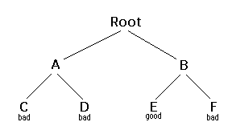

Copyright ©2002 by David Matuszek
Backtracking is a form of recursion.
The usual scenario is that you are faced with a number of options, and you must choose one of these. After you make your choice you will get a new set of options; just what set of options you get depends on what choice you made. This procedure is repeated over and over until you reach a final state. If you made a good sequence of choices, your final state is a goal state; if you didn't, it isn't.
Conceptually, you start at the root of a tree; the tree probably has some good leaves and some bad leaves, though it may be that the leaves are all good or all bad. You want to get to a good leaf. At each node, beginning with the root, you choose one of its children to move to, and you keep this up until you get to a leaf.
Suppose you get to a bad leaf. You can backtrack to continue the search for a good leaf by revoking your most recent choice, and trying out the next option in that set of options. If you run out of options, revoke the choice that got you here, and try another choice at that node. If you end up at the root with no options left, there are no good leaves to be found.
This needs an example.

In this example we drew a picture of a tree. The tree is an abstract model of the possible sequences of choices we could make. There is also a data structure called a tree, but usually we don't have a data structure to tell us what choices we have. (If we do have an actual tree data structure, backtracking on it is called depth-first tree searching.)
Here is the algorithm (in pseudocode) for doing backtracking from a given node n:
boolean solve(Node n) {
if n is a leaf node {
if the leaf is a goal node, return true
else return false
} else {
for each child c of n {
if solve(c) succeeds, return true
}
return false
}
}
Notice that the algorithm is expressed as a boolean function. This is essential to understanding the algorithm. If solve(n) is true, that means node n is part of a solution--that is, node n is one of the nodes on a path from the root to some goal node. We say that n is solvable. If solve(n) is false, then there is no path that includes n to any goal node.
How does this work?
Hence, to decide whether any non-leaf node n is solvable (part of a path to a goal node), all you have to do is test whether any child of n is solvable. This is done recursively, on each child of n. In the above code, this is done by the lines
for each child c of n {
if solve(c) succeeds, return true
}
return false
Eventually the recursion will "bottom" out at a leaf node. If the leaf node is a goal node, it is solvable; if the leaf node is not a goal node, it is not solvable. This is our base case. In the above code, this is done by the lines
if n is a leaf node {
if the leaf is a goal node, return true
else return false
}
The backtracking algorithm is simple but important. You should understand it thoroughly. Another way of stating it is as follows:
Non-recursive backtracking, using a stack
Backtracking is a rather typical recursive algorithm, and any recursive algorithm can be rewritten as a stack algorithm. In fact, that is how your recursive algorithms are translated into machine or assembly language.
boolean solve(Node n) {
put node n on the stack;
while the stack is not empty {
if the node at the top of the stack is a leaf {
if it is a goal node, return true
else pop it off the stack
}
else {
if the node at the top of the stack has untried children
push the next untried child onto the stack
else pop the node off the stack
}
return false
}
Starting from the root, the only nodes that can be pushed onto the stack are the children of the node currently on the top of the stack, and these are only pushed on one child at a time; hence, the nodes on the stack at all times describe a valid path in the tree. Nodes are removed from the stack only when it is known that they have no goal nodes among their descendents. Therefore, if the root node gets removed (making the stack empty), there must have been no goal nodes at all, and no solution to the problem.
When the stack algorithm terminates successfully, the nodes on the stack form (in reverse order) a path from the root to a goal node.
Similarly, when the recursive algorithm finds a goal node, the path information is embodied (in reverse order) in the sequence of recursive calls. Thus as the recursion unwinds, the path can be recovered one node at a time, by (for instance) printing the node at the current level, or storing it in an array.
Here is the recursive backtracking algorithm, modified slightly to print (in reverse order) the nodes along the successful path:
boolean solve(Node n) {
if n is a leaf node {
if the leaf is a goal node {
print n
return true
}
else return false
} else {
for each child c of n {
if solve(c) succeeds {
print n
return true
}
}
return false
}
}
Keeping backtracking simple
All of these versions of the backtracking algorithm are pretty simple, but when applied to a real problem, they can get pretty cluttered up with details. Even determining whether the node is a leaf can be complex: for example, if the path represents a series of moves in a chess endgame problem, the leaves are the checkmate and stalemate solutions.
To keep the program clean, therefore, tests like this should be buried in methods.
In a chess game, for example, you could test whether a node is a leaf by writing
a gameOver method (or you could even call it isLeaf).
This method would encapsulate all the ugly details of figuring out whether any
possible moves remain.
Notice that the backtracking altorithms require us to keep track, for each
node on the current path, which of its children have been tried already (so
we don't have to try them again). In the above code we made this look simple,
by just saying for each child c of n.
In reality, it may be difficult to figure out what the possible children are,
and there may be no obvious way to step through them. In chess, for example,
a node can represent one arrangement of pieces on a chessboard, and each child
of that node can represent the arrangement after some piece has made a legal
move. How do you find these children, and how do you keep track of which ones
you've already examined?
The most straightforward way to keep track of which children of the node have been tried is as follows: Upon initial entry to the node (that is, when you first get there from above), make a list of all its children. As you try each child, take it off the list. When the list is empty, there are no remaining untried children, and you can return "failure." This is a simple approach, but it may require quite a lot of additional work.
There is an easier way to keep track of which children have been tried, if you can define an ordering on the children. If there is an ordering, and you know which child you just tried, you can determine which child to try next.
For example, you might be able to number the children 1 through
n, and try them in numerical order. Then, if you have just tried child
k, you know that you have already tried children 1 through
k-1, and you have not yet tried children k+1 through
n. Or, if you are trying to color a map with just four colors, you can
always try red first, then yellow, then green, then blue. If child yellow fails,
you know to try child green next. If you are searching a maze, you can try choices
in the order left, straight, right (or perhaps north, east, south, west).
It isn't always easy to find a simple way to order the children of a node. In the chess game example, you might number your pieces (or perhaps the squares of the board) and try them in numerical order; but in addition each piece may also have several moves, and these must also be ordered.
You can probably find some way to order the children of a node. If the ordering scheme is simple enough, you should use it; but if it is too cumbersome, you are better off keeping a list of untried children.
Example: TreeSearch
For starters, let's do the simplest possible example of backtracking, which is searching an actual tree. We will also use the simplest kind of tree, a binary tree.
A binary tree is a data structure composed of nodes. One node is designated as the root node. Each node can reference (point to) zero, one, or two other nodes, which are called its children. The children are referred to as the left child and/or the right child. All nodes are reachable (by one or more steps) from the root node, and there are no cycles. For our purposes, although this is not part of the definition of a binary tree, we will say that a node might or might not be a goal node, and will contain its name. The first example in this paper (which we repeat here) shows a binary tree.
What are the children?
One of the things that simplifies the above binary tree search is that, at each choice point, you can ignore all the previous choices. Previous choices don't give you any information about what you should do next; as far as you know, both the left and the right child are possible solutions. In many problems, however, you may be able to eliminate children immediately, without recursion.
Consider, for example, the problem of four-coloring a map. It is a theorem of mathematics that any map on a plane, no matter how convoluted the countries are, can be colored with at most four colors, so that no two countries that share a border are the same color.
To color a map, you choose a color for the first country, then a color for the second country, and so on, until all countries are colored. There are two ways to do this:
Let's apply each of these two methods to the problem of coloring a checkerboard. This should be easily solvable; after all, a checkerboard only needs two colors.
In both methods, the colors are represented by integers, from RED=1 to
BLUE=4. We define the following helper methods. The helper method code
isn't displayed here because it's not important for understanding the method
that does the backtracking.
boolean mapIsOK()boolean okToColor(int row, int column, int color)int[] nextRowAndColumn(int row, int column)Here's the code for method 1:
boolean explore1(int row, int column, int color) {
if (row >= NUM_ROWS) return mapIsOK();
map[row][column] = color;
for (int nextColor = RED; nextColor <= BLUE; nextColor++) {
int[] next = nextRowAndColumn(row, column);
if (explore1(next[0], next[1], nextColor)) return true;
}
return false;
}
And here's the code for method 2:
boolean explore2(int row, int column, int color) {
if (row >= NUM_ROWS) return true;
if (okToColor(row, column, color)) {
map[row][column] = color;
for (int nextColor = RED; nextColor <= BLUE; nextColor++) {
int[] next = nextRowAndColumn(row, column);
if (explore2(next[0], next[1], nextColor)) return true;
}
}
return false;
}
Those appear pretty similar, and you might think they are equally good. However, the timing information suggests otherwise:
| 2 by 3 map | 3 by 3 map | 3 by 4 map | |
|---|---|---|---|
| Method 1 | 60 ms. | 940 ms. | 60530 ms. (1 minute) |
| Method 2 | 0 ms. | 0 ms. | 0 ms. |
Example: Cindy's Puzzle
I call the following puzzle "Cindy's puzzle" for historical reasons.
You have some number n of black marbles and the same number of
white marbles, and you have a playing board which consists simply of a line
of 2n+1 spaces to put the marbles in. Start with the black marbles
all at one end (say, the left), the white marbles all at the other end, and
a free space in between.
The goal is to reverse the positions of the marbles:
The black marbles can only move to the right, and the white marbles can only move to the left (no backing up). At each move, a marble can either:
For example, you could make the following sequence of moves:
| Starting position: |
|
|||||
| Black moves ahead: |
|
|||||
| White jumps: |
|
|||||
| Black moves ahead: |
|
|||||
| Black jumps: |
|
|||||
| White moves ahead: |
|
|||||
| Stuck! |
Now to the program. The main program will initialize the board, and call a recursive backtracking routine to attempt to solve the puzzle. The backtracking routine will either succeed and print out a winning path, or it will fail, and the main program will have to print out the bad news. The backtracking method is named solvable and returns a boolean. In solvable we shall need to check whether we are at a leaf, which in this case means a position from which no further moves are possible. This isn't so easy. Each possible move will result in a new board position, and these new board positions are the children of the current board position. Hence to find the children of a node (that is, of a board position), we need only find the possible moves from that node. Remember that it is also highly desirable to find an ordering on these possible moves. Here it is time to stop and take thought. To make progress, we must analyze the game to some extent. Probably a number of approaches would work, and what follows is based on the way I worked it out. If you were to program this puzzle, you might find a different but equally valid approach. First, notice that if a marble has a move, that move is unique: if it can move ahead one square, then it cannot jump. If it can jump, it cannot move ahead one square. This suggests that, to find the possible moves, we might assign numbers to the marbles, and check each marble in turn. When we have looked at all the marbles, we have looked at all the possible moves. This would require having a table to keep track of where each marble is, or else somehow "marking" each marble with its number and searching the board each time to find the marble we want. Neither alternative is very attractive. Next, notice that for a given board position, each marble occupies a unique space. Hence, instead of talking about moving a particular marble, we can talk about moving the marble in a particular space. If a move is possible from a given space, then that must be the only move possible from that space, because if the marble in that space has a move, it is unique. There is a slight complication because not every space contains a marble, but at least the spaces (unlike the marbles) stay in one place.